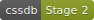

cssdb is a comprehensive list of CSS features and their positions in the process of becoming implemented web standards.
all
A property for defining the reset of all properties of an element
Specification
a { all: initial; }
Properties for defining the break behavior between and within boxes
a { break-inside: avoid; break-before: avoid-column; break-after: always; }
A syntax for defining custom values accepted by all CSS properties
img { --some-length: 32px; height: var(--some-length); width: var(--some-length); }
font-variant
A property for defining the usage of alternate glyphs in a font
h2 { font-variant: small-caps; }
Properties for defining gutters within a layout
.grid-1 { gap: 20px; } .grid-2 { column-gap: 40px; row-gap: 20px; }
A syntax for using a grid concept to lay out content
section { display: grid; grid-template-columns: 100px 100px 100px; grid-gap: 10px; }
A syntax for defining media query ranges using ordinary comparison operators
@media (width < 480px) {} @media (480px <= width < 768px) {} @media (width >= 768px) {}
:any-link
A pseudo-class for matching anchor elements independent of whether they have been visited
nav :any-link > span { background-color: yellow; }
An attribute selector matching attribute values case-insensitively
[frame=hsides i] { border-style: solid none; }
color-adjust
The color-adjust property is a non-standard CSS extension that can be used to force printing of background colors and images
.background { background-color:#ccc; } .background.color-adjust { color-adjust: economy; } .background.color-adjust-exact { color-adjust: exact; }
:dir
A pseudo-class for matching elements based on their directionality
blockquote:dir(rtl) { margin-right: 10px; } blockquote:dir(ltr) { margin-left: 10px; }
A syntax for using two positions in a gradient.
.pie_chart { background-image: conic-gradient(yellowgreen 40%, gold 0deg 75%, #f06 0deg); }
:focus-visible
A pseudo-class for matching focused elements that indicate that focus to a user
:focus:not(:focus-visible) { outline: 0; }
:focus-within
A pseudo-class for matching elements that are either focused or that have focused descendants
form:focus-within { background: rgba(0, 0, 0, 0.3); }
gray()
A function for specifying fully desaturated colors
p { color: gray(50); }
:has()
A pseudo-class for matching ancestor and sibling elements
a:has(> img) { display: block; }
A 4 & 8 character hex color notation for specifying the opacity level
section { background-color: #f3f3f3f3; color: #0003; }
hwb()
A function for specifying colors by hue and then a degree of whiteness and blackness to mix into it
p { color: hwb(120 44% 50%); }
image-set()
A function for specifying image sources based on the user’s resolution
p { background-image: image-set( "foo.png" 1x, "foo-2x.png" 2x, "foo-print.png" 600dpi ); }
:in-range
:out-of-range
A pseudo-class for matching elements that have range limitations
input:in-range { background-color: rgba(0, 255, 0, 0.25); } input:out-of-range { background-color: rgba(255, 0, 0, 0.25); border: 2px solid red; }
lab()
A function for specifying colors expressed in the CIE Lab color space
body { color: lab(240 50 20); }
lch()
A function for specifying colors expressed in the CIE Lab color space with chroma and hue
body { color: lch(53 105 40); }
Flow-relative (left-to-right or right-to-left) properties and values
span:first-child { float: inline-start; margin-inline-start: 10px; }
:matches()
A pseudo-class for matching elements in a selector list
p:matches(:first-child, .special) { margin-top: 1em; }
:not()
A pseudo-class for ignoring elements in a selector list
p:not(:first-child, .special) { margin-top: 1em; }
overflow
A property for defining overflow-x and overflow-y
overflow-x
overflow-y
Specification 
html { overflow: hidden auto; }
overflow-wrap
A property for defining whether to insert line breaks within words to prevent overflowing
p { overflow-wrap: break-word; }
Properties for defining alignment within a layout
.example { place-content: flex-end; place-items: center / space-between; place-self: flex-start / center; }
:read-only
:read-write
Pseudo-classes to match elements which are considered user-alterable
input:read-only { background-color: #ccc; }
rebeccapurple
A particularly lovely shade of purple in memory of Rebecca Alison Meyer
html { color: rebeccapurple; }
system-ui
A generic font used to match the user’s interface
body { font-family: system-ui; }
:blank
A pseudo-class for matching form elements when they are empty
input:blank { background-color: yellow; }
A space and slash separated notation for specifying colors
em { background-color: hsl(120deg 100% 25%); box-shadow: 0 0 0 10px hwb(120deg 100% 25% / 80%); color: rgb(0 255 0); }
An at-rule for defining aliases that represent media queries
@custom-media --narrow-window (max-width: 30em); @media (--narrow-window) {}
An at-rule for defining aliases that represent selectors
@custom-selector :--heading h1, h2, h3, h4, h5, h6; article :--heading + p {}
overscroll-behavior
Properties for controlling when the scroll position of a scroll container reaches the edge of a scrollport
.messages { height: 220px; overflow: auto; overscroll-behavior-y: contain; } body { margin: 0; overscroll-behavior: none; }
prefers-color-scheme
A media query to detect if the user has requested the system use a light or dark color theme
body { background-color: white; color: black; } @media (prefers-color-scheme: dark) { body { background-color: black; color: white; } }
prefers-reduced-motion
A media query to detect if the user has requested less animation and general motion on the page
.animation { animation: vibrate 0.3s linear infinite both; } @media (prefers-reduced-motion: reduce) { .animation { animation: none; } }
:where()
A pseudo-class for matching elements in a selector list without contributing specificity
a:where(:not(:hover)) { text-decoration: none; }
A syntax for using custom values accepted by CSS globally
@media (max-width: env(--brand-small)) { body { padding: env(--brand-spacing); } }
A syntax for nesting relative rules within rules
article { & p { color: #333; } }
At-rules for specifying media queries and support queries in a single grammar
@when media(width >= 640px) and (supports(display: flex) or supports(display: grid)) { /* A */ } @else media(pointer: coarse) { /* B */ } @else { /* C */ }
Want to contribute? Checkout the cssdb on GitHub